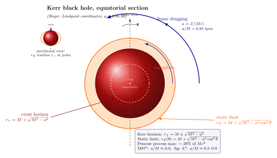

旋转黑洞为什么有"能层"?
上一节我们看了一个观察者沿径向落入 Schwarzschild 黑洞的固有时与坐标时差异 — 视界对外面看是"冻结", 对自己看是几秒钟通过. 但 Schwarzschild 度规假设黑洞不旋转, 这在天体物理中几乎不成立. 任何形成黑洞的过程 — 大质量恒星塌缩、双星合并、吸积盘吸物质 — 都自带角动量; 角动量守恒强迫塌缩物体自旋加快, 直到形成的黑洞往往以接近极限的速度自转. EHT 2019 年发表的 M87* 黑洞照片以及 2022 年的 Sgr A*, 它们的图像形态都显示明显的旋转效应. 我们必须把"旋转"这件事写进度规里.
这件事比 Schwarzschild 难得多, 因为 "球对称" 被打破了 — 旋转把空间分成赤道与两极, 度规不能再仅仅依赖 $r$. 我们能保留的对称性只剩两条: 稳态 (与时间无关) 与 轴对称 (绕旋转轴 $\varphi$ 不变). Schwarzschild 是 1916 年, Kerr 是 1963 年 — 中间隔了 47 年, 这中间不知道多少人尝试过, 都没找到. Kerr 自己后来回忆: "我那时只是个 28 岁的博士后, 谁也不指望我能做出来."
一、Kerr 度规: 从对称性到 Boyer-Lindquist 形式
稳态 + 轴对称给出度规存在两个 Killing 矢量 $\xi^\mu = \partial_t$ 和 $\eta^\mu = \partial_\varphi$, 度规分量与 $t$、$\varphi$ 无关. 但 — 这是关键 — 与 Schwarzschild 不同, 现在不再有"时间反演不变性": 一个旋转的黑洞, 你把时间倒过来, 它就反着转了, 物理状态不一样. 因此度规允许 $\mathrm dt\,\mathrm d\varphi$ 的混合项, 它正是描述"时空被拖着转"的几何效应.
把这条想法贯彻到底, 解出真空 Einstein 方程 $R_{\mu\nu}=0$, 1963 年 Kerr 给出的结果用 Boyer-Lindquist 坐标 $(t, r, \theta, \varphi)$ 写下来最干净. 引入两个辅助函数
$$ \Sigma(r,\theta) \equiv r^2 + a^2\cos^2\theta, \qquad \Delta(r) \equiv r^2 - 2Mr + a^2, $$
这里我们用几何单位 $G=c=1$, $M$ 是质量, $a\equiv J/(Mc)$ 是单位质量角动量 (以长度为量纲, 对极端 Kerr 黑洞 $a\to M$). Kerr 度规为
$$ \begin{aligned} \mathrm ds^2 = &-\Bigl(1 - \frac{2Mr}{\Sigma}\Bigr)\mathrm dt^2 - \frac{4Mar\sin^2\theta}{\Sigma}\,\mathrm dt\,\mathrm d\varphi + \frac{\Sigma}{\Delta}\mathrm dr^2 \\ &+ \Sigma\,\mathrm d\theta^2 + \Bigl(r^2+a^2 + \frac{2Ma^2 r\sin^2\theta}{\Sigma}\Bigr)\sin^2\theta\,\mathrm d\varphi^2. \end{aligned} \tag{1} $$
三个特征:
- 令 $a=0$, 立刻退化到 Schwarzschild: $\Sigma\to r^2$, $\Delta\to r(r-2M)$, $g_{tt}\to -(1-2M/r)$, $g_{rr}\to (1-2M/r)^{-1}$, 交叉项消失.
- $g_{t\varphi}\propto Mar\sin^2\theta$: 这就是 frame dragging — 时空被黑洞旋转拖着走, 在赤道 ($\theta=\pi/2$) 处最强, 极轴 ($\theta=0$) 处为零. 和 Schwarzschild 完全不同.
- $\Sigma$ 在 $r=0,\theta=\pi/2$ 处归零 — 那是 Kerr 黑洞真正的奇点, 但它不再是个点, 而是一个赤道平面里的环 (ring singularity), 半径 $a$. 这是 Kerr 解最反直觉的几何特征.
Kerr 1963 年 7 月在德州首届相对论天体物理研讨会 (Texas Symposium) 上宣布这个解时, 全场气氛是怀疑的 — 有些资深天体物理学家甚至当场打瞌睡. 几年后人们才意识到这个解的力量: 1971 年 Werner Israel、1975 年 Brandon Carter、1975 年 Stephen Hawking 的一系列工作合起来证明了所谓 无毛定理: 任何稳态、轴对称、渐近平坦的黑洞真空解, 必然由 $(M, J, Q)$ 三个参数唯一刻画 — 普通中性黑洞就是 Kerr. 真实宇宙里的天体黑洞, 几乎全是 Kerr.
二、视界与静态边界: 两个不同的曲面
Schwarzschild 黑洞里, 视界与"无穷红移面"是同一个面 ($r=r_s$). Kerr 黑洞里, 这两件事分开了 — 这就是能层的几何根源.
视界由 $g_{rr}\to\infty$ (对应 $\Delta=0$) 给出. 解二次方程 $r^2-2Mr+a^2=0$:
$$ \boxed{\;r_\pm = M \pm \sqrt{M^2-a^2}.\;} \tag{2} $$
外视界 $r_+$ 是真正的事件视界 — 它是个球, 跟 $\theta$ 无关; 内视界 $r_-$ 是另一个有趣的曲面 (Cauchy horizon), 我们这里不展开. $r_+$ 存在的条件是 $a\leq M$, 即角动量有上限 $J\leq M^2 c/G$ — 极端 Kerr ($a=M$) 时 $r_+=r_-=M$ 双视界合并. 超过这个上限就没视界了, 露出一个"裸奇点" — Penrose 1969 年的 宇宙审查猜想 说自然界拒绝这样做, 但目前未严格证明.
静态边界 (static limit) 由"$\partial_t$ 变成零矢量"给出, 即 $g_{tt}=0$:
$$ -\Bigl(1-\frac{2Mr}{\Sigma}\Bigr) = 0 \;\Longrightarrow\; r^2-2Mr+a^2\cos^2\theta = 0. $$
解出
$$ \boxed{\;r_E(\theta) = M + \sqrt{M^2 - a^2\cos^2\theta}.\;} \tag{3} $$
对比 (2) 和 (3) 两条公式: 它们在极轴 ($\cos\theta=\pm 1$) 处相等, 即 $r_E=r_+$ — 静态边界与视界在两极相切; 在赤道 ($\cos\theta=0$) 处, $r_E = 2M$ — 跟 Schwarzschild 视界一样大, 但比 $r_+ = M+\sqrt{M^2-a^2} \lt 2M$ 大. 因此 $r_E$ 包在 $r_+$ 外面, 像一个略扁的椭球套在球形视界外, 两端在极点处吻合, 中间在赤道处张开. $r_+$ 与 $r_E$ 之间的环形区域就是能层 (ergosphere).
能层里发生什么? $g_{tt} \gt 0$ — 时间方向的 Killing 矢量 $\xi^\mu=\partial_t$ 变成了空间型 (spacelike). 这意味着: 一个观察者要"保持静止"(沿 $\xi^\mu$ 走), 他的世界线必须是空间型 — 但任何有质量物体的世界线必须时间型, 所以这不可能. 在能层里, 任何观察者都必须沿黑洞旋转方向运动, 即 $\mathrm d\varphi/\mathrm dt \gt 0$, 静止不动是不允许的. 这是 frame dragging 极致版.
注意能层里的观察者依然可以离开: $r_+$ 才是真正的"出不去"的视界. 能层只是"必须跟着转", 不是"必须落进去". 这个区别正是 Penrose 过程的物理基础.
三、Penrose 过程: 从黑洞的旋转抽能
Penrose 1969 年在 Rivista del Nuovo Cimento 上提出一个看上去像魔术的想法. 假设你从远处往能层扔一个物体 A, 它的能量是 $E_A\gt 0$ — 这是从无穷远定义的能量, 即 $-\xi_\mu p^\mu$ 沿测地线守恒. 在能层里面, 由于 $\xi^\mu$ 变成空间型, 这个守恒量在那里允许是负值 — 即一个粒子在能层里可以拥有"负能量"的状态. (在 Schwarzschild 视界外, $E$ 必须正; 在 Kerr 能层里, $E$ 可以负 — 这是几何的自然推论.)
Penrose 的妙招是: 让 A 在能层里分裂成两块 B 和 C. 选合适的分裂方向, 让 B 沿"反旋转"方向运动, 它的能量 $E_B\lt 0$; 由四动量守恒 $E_A = E_B + E_C$, 即 $E_C = E_A - E_B \gt E_A$. 然后让 B 落进 $r_+$ (因为能层不阻止它落入), 让 C 飞回无穷远. 你最终拿回的是 C, 它的能量比当初投入的 A 多了 $|E_B|$ — 这部分能量来自黑洞的旋转 (黑洞吞下负能粒子, 角动量与质量都减少).
这不是永动机 — 黑洞的"可抽能"有上限. Christodoulou 1970 年与 Christodoulou-Ruffini 1971 年用面积定理证明: 黑洞的不可约质量
$$ M_{\rm irr}^2 = \tfrac12\Bigl(M^2 + \sqrt{M^4 - J^2}\Bigr) $$
只能增大不能减小 (面积单调). 所以总能量 $M$ 与不可约质量 $M_{\rm irr}$ 之差就是可抽出的旋转能上限. 极端 Kerr 黑洞 ($a=M$, 即 $J=M^2$) 的可抽量是
$$ M - M_{\rm irr} = M\Bigl(1 - \frac{1}{\sqrt 2}\Bigr) \approx 0.293\,M. $$
即极端 Kerr 黑洞理论上能"奉献"出大约 $29.3\%$ 的总质能 (大约 $0.293\,Mc^2$) 用作 Penrose 抽能的总预算. 单次 Penrose 过程的最高效率约 $20.7\%$ (具体取决于分裂粒子的相对论能量分配). 这个 $29\%$ 的数字非常醒目: 化学燃烧 $\sim 10^{-9}$, 核聚变约 $0.7\%$, Schwarzschild 黑洞吸积盘最高约 $5.7\%$, 而旋转黑洞 Penrose 过程能做到近 $30\%$ — 是已知最高效的能量提取机制之一.
真实宇宙中类似 Penrose 抽能的物理过程是 Blandford-Znajek 机制 (1977): 把"分裂的粒子"换成穿过能层的电磁场, 通过磁场的扭转把黑洞旋转能转成 Poynting 流, 驱动相对论性喷流. 这被认为是活动星系核 (AGN)、$\gamma$-射线暴 (GRB)、M87* 喷流的能量来源. M87* 喷流功率估计约 $10^{43}$ erg/s, 与 BZ 机制估算相符.
四、自然界中的 Kerr 黑洞: 自旋测量
真实黑洞的自旋怎么测? 关键观测量是 无量纲自旋 $\chi \equiv a/M = Jc/(GM^2)$, 物理范围 $0\leq\chi\leq 1$. 测量方法主要两类:
- X-射线吸积盘谱: ISCO (innermost stable circular orbit) 半径强烈依赖 $\chi$. Schwarzschild ($\chi=0$) ISCO 为 $6M$, 极端正向旋转 ($\chi=1$) ISCO 收到 $M$, 反向旋转的 ISCO 远在 $9M$. 拟合 K$\alpha$ 铁线轮廓或 X-ray 连续谱, 得 $\chi$. 例如 Cygnus X-1: $\chi \gt 0.95$; GRS 1915+105: $\chi \gt 0.98$.
- EHT 阴影形态: 阴影直径与形状随 $\chi$ 变. M87* 估计 $\chi \approx 0.9$ (高自旋, 与 BZ 喷流一致). Sgr A*: 目前数据给的 $\chi$ 在 $0.5$–$0.9$ 之间, 偏向高自旋, 但误差大.
代具体数字: M87* 质量 $M \approx 6.5\times 10^9\,M_\odot$, 取 $\chi=0.9$, 则 $a = 0.9 M$. 视界 $r_+ = M + \sqrt{M^2-a^2} = M(1+\sqrt{1-0.81}) = M\times 1.436 \approx 1.4 M$. 静态边界赤道 $r_E = 2M$, 比 $r_+$ 大 $0.56 M$ — 能层赤道厚度是黑洞史瓦西半径的约 $28\%$. 折成 SI 单位: $M = 6.5\times 10^9\times 1.989\times 10^{30}$ kg $= 1.29\times 10^{40}$ kg, $r_g = GM/c^2 \approx 1.0\times 10^{13}$ m, 视界 $r_+ \approx 1.4\times 10^{13}$ m $\approx 100$ AU — 比海王星轨道 ($\approx 30$ AU) 大三倍多.
Sgr A* 的自旋更难测, 因为它吸积率非常低 ($\sim 10^{-9}\,M_\odot$/yr), 没有可观的吸积盘谱. EHT 通过不同模型拟合 2017 年观测数据, 偏向 $\chi\sim 0.5$–$0.9$ 的中-高自旋区, 但目前 1-$\sigma$ 误差能覆盖到 $0.1$. 等下一代 EHT (升级到 0.85 mm 与更长基线) 才能把这件事钉住.
下面这张图把 Kerr 黑洞的赤道剖面画出来: 中央"环奇点", 球形外视界 $r_+$ (深红填充), 椭球形静态边界 $r_E$ (橙黄阴影), 二者间的能层, 以及表示 frame dragging 的旋转箭头.

能层里的"必须转"听起来玄, 但它有可观测后果. 一个落入旋转黑洞的物体, 一旦穿过 $r_E$, 它的轨道 $\varphi(t)$ 必然单调向 $a$ 同号的方向旋转 — 即使最初它没有任何轨道角动量. 一个静止下落的探针在 Schwarzschild 里径向直入, 在 Kerr 里在 $r\lt r_E$ 必然螺旋. 这种"被拖着走"的现象是无毛定理给出的几何普适后果.
五、Lense-Thirring 拖曳: 弱场版 frame dragging
Kerr 解的强场效应在地球上看不到 — 但弱场版本的 frame dragging 在 1918 年由 Joseph Lense 与 Hans Thirring 首次推出. 在远场 ($r\gg M$, $a$), Kerr 度规 (1) 的 $g_{t\varphi}$ 项展开为
$$ g_{t\varphi} \approx -\frac{2Ma\sin^2\theta}{r} = -\frac{2GJ\sin^2\theta}{c^3 r}, $$
这给出一个角速度 $\omega(r,\theta) \approx 2GJ/(c^2 r^3)$ 的"拖曳", 让一个本应静止的陀螺仪绕地球的转动轴方向漂移. 对地球, $J = I\Omega \sim 7.07\times 10^{33}$ kg·m²/s, 在低轨道 ($r\sim R_\oplus + 600$ km) 拖曳率约 $0.04$"/年 — 极小. NASA Gravity Probe B 卫星 2004–2010 年用四个超导陀螺仪精确测了这件事, 2011 年最终结果给出 $-37.2 \pm 7.2$ mas/yr, 与 GR 预言 $-39.2$ mas/yr 一致 (mas = milli-arcseconds). 这是 frame dragging 在地球轨道上的直接测量 — Kerr 度规预言的几何效应不是抽象数学, 而是一颗精密陀螺仪能转动的角度.
把这个回放到 M87*: 在视界外 $r\sim 2 r_+$ 处, $\omega \sim 0.5\,c/r_+\sim 10^{-5}$ rad/s — 周期约一周. 吸积盘里的物质必须以接近这个角速度跟着转, 这是 EHT 图像里看到的"亮度不对称"(明亮一侧是顺旋转面向我们, 多普勒增强) 的物理来源. M87* 图像东南方向的亮带正对应同向的拖曳, 从而独立印证了 $\chi\sim 0.9$ 的高自旋.
小结
Kerr 1963 年的轴对称真空解 (1) 描述了真实宇宙里几乎所有黑洞 — 它由 $(M, a)$ 两参数完全决定 ($a=J/Mc$). 关键几何特征是: 视界 $r_+ = M+\sqrt{M^2-a^2}$ 与静态边界 $r_E = M+\sqrt{M^2-a^2\cos^2\theta}$ 不再重合, 二者之间的能层是一个"必须跟着黑洞转" 的环形区域. Penrose 1969 年指出这件事的物理后果: 在能层里 $\partial_t$ 变成空间型, 允许"负能"测地线, 因此一次合适的分裂能从黑洞抽出净能量, 极端 Kerr 黑洞总可抽量为 $1-1/\sqrt 2\approx 29.3\%$ 的 $Mc^2$. 真实宇宙的对应物是 Blandford-Znajek 电磁机制, 它驱动 M87*、AGN、$\gamma$-射线暴等天体的相对论性喷流. 自旋测量上, M87* 给出 $a/M\approx 0.9$, Sgr A* 在 $0.5$–$0.9$ 之间, GRS 1915+105 接近极端 $0.98$. 弱场 Lense-Thirring 拖曳已被 Gravity Probe B (2011) 精确确认. 下一节我们要让黑洞接触量子力学 — Hawking 1974 年说视界附近的真空涨落让黑洞像热体一样辐射, 温度 $T_H=\hbar c^3/(8\pi GMk_B)$.
▲